Solualuminios · Inventario de perfiles. Registro de paquetes, operaciones, despachos y solicitudes de material.
Versión 1 · Noviembre de 2026
Para el rol Bodega (bodegas y almacenes)
Las personas, clientes y paquetes de los pantallazos son de ejemplo.
1Antes de empezar
1.1 Qué puedes hacer con tu rol
Con el rol Bodega puedes:
registrar paquetes: el inventario que ya existía y la mercancía que llega;
consultar cualquier paquete por su chip y ver su historial;
abrir un paquete, registrar una salida o trasladarlo;
leer muchos chips a la vez y trasladarlos juntos;
preparar despachos de órdenes de venta y confirmar su salida;
preparar y enviar solicitudes de materiales a un almacén, o recibirlas si trabajas en el almacén;
organizar tus tareas.
Cada usuario de Bodega tiene una ubicación asignada (por ejemplo Bodega 116 o Almacén 7 de agosto). Los despachos y las solicitudes se asignan a las personas de la ubicación de donde sale o adonde llega el material.
Ajustes de inventario
Corregir cantidades (ajustes de entrada o salida) es solo del administrador. Si un paquete tiene una cantidad equivocada, avísale.
1.2 Ingresar a la aplicación
Abre la dirección de la aplicación, escribe tu correo y tu contraseña y presiona Iniciar sesión. Si recargas o cierras la página tendrás que ingresar de nuevo.
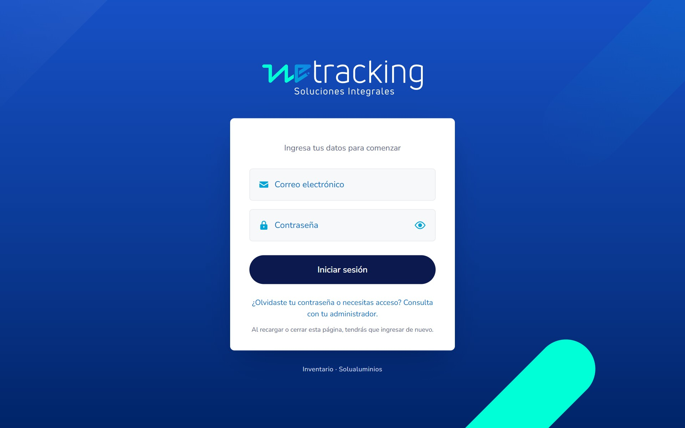
Pantalla de ingreso.
1.3 Inicio y menú
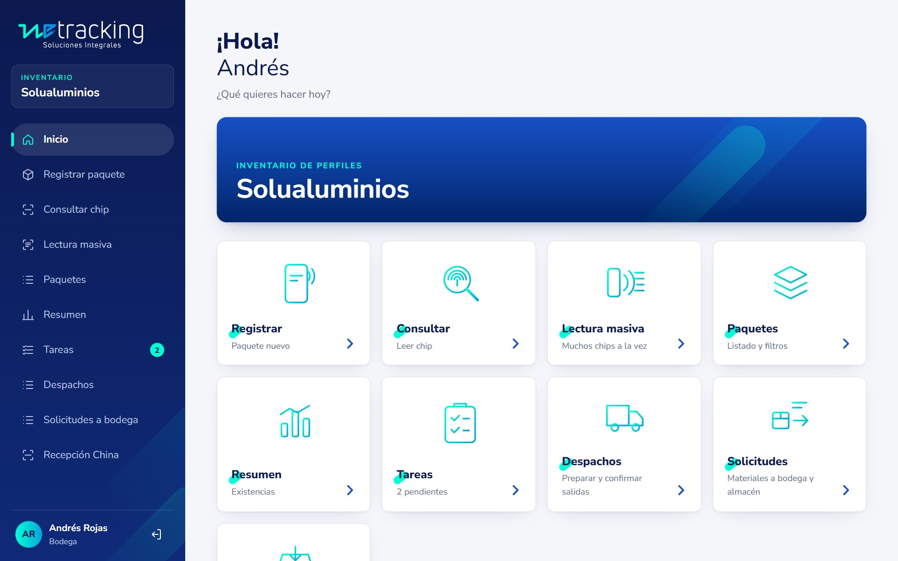
Inicio de un usuario de Bodega. El número junto a Tareas indica cuántas tiene pendientes.
Sección
Para qué sirve
Registrar paquete
Dar de alta paquetes con su chip, producto, ubicación y cantidad.
Consultar chip
Ver un paquete y hacer sus operaciones: abrir, salida o traslado.
Lectura masiva
Leer muchos chips a la vez y trasladarlos juntos.
Paquetes
Lista de paquetes con filtros.
Resumen
Perfiles disponibles por referencia y color, y dónde están.
Tareas
Despachos y solicitudes asignados, y tus propias tareas.
Despachos
Entregas de órdenes de venta por preparar y confirmar.
Solicitudes a bodega
Pedidos de material entre bodega y almacén.
1.4 En el celular
En el celular, la barra de abajo tiene Inicio, Registrar, Chip, Paquetes, Resumen y Tareas. Despachos, Lectura masiva y Solicitudes se abren desde Inicio. Puedes instalar la app desde Inicio → Este dispositivo → Instalar aplicación.
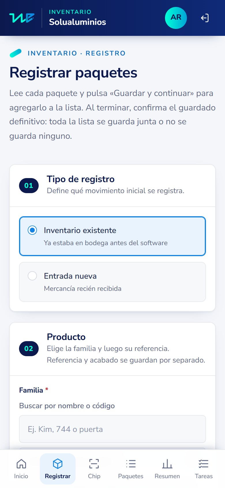
Registrar paquete en el celular.
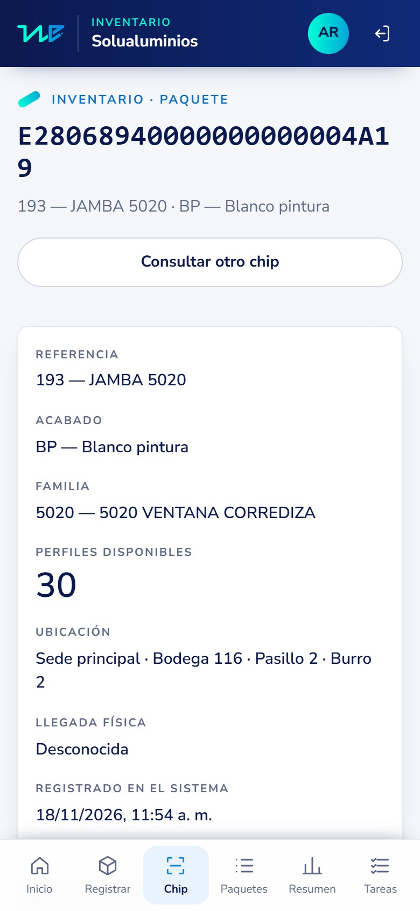
Consulta de un paquete en el celular.
1.5 Notificaciones
Actívalas en Inicio → Este dispositivo → Activar notificaciones y prueba con Enviar notificación de prueba. Te avisan cuando:
te asignan un despacho, o te lo reasignan o lo cancelan;
tienes una solicitud de materiales por preparar, o la cancelan;
sale de bodega una solicitud que debes recibir en tu almacén;
te asignan una tarea.
Pantallazos pendientes (celular real)«Este dispositivo» con «Activar notificaciones» y una notificación de despacho asignado en el teléfono.
1.6 El lector de chips
Cada paquete tiene una etiqueta con un chip (RFID UHF). El código de fábrica del chip es el que identifica al paquete. Hay dos formas de leerlo:
Modo teclado: la pistola escribe el código en el campo donde está el cursor, como si fuera un teclado. Funciona en todos los campos «Código del chip».
Bluetooth: en Lectura masiva y en los despachos, el botón Conectar lector Bluetooth conecta la pistola Chafon (H100, H102 o H103) para leer muchos chips seguidos.
Si el chip no se puede leer, también puedes escribir el código a mano.
Pantallazos pendientes (lector real)Emparejar la pistola con el celular, el botón «Conectar lector Bluetooth» y una lectura en curso.
2Registrar paquetes
2.1 Inventario existente o entrada nueva
Lo primero es elegir el tipo de registro. Son operaciones distintas y no se deben confundir:
Tipo
Cuándo usarlo
Inventario existente
El paquete ya estaba en bodega antes de usar el sistema (carga inicial del inventario).
Entrada nueva
Mercancía recién recibida.
Un paquete se registra una sola vez
Si lees el chip de un paquete que ya está registrado, el sistema no vuelve a sumar su stock. Para moverlo usa Traslado; para consultarlo, Consultar chip.
2.2 Llenar el registro
Entra a Registrar paquete y elige el tipo de registro.
Producto: elige la familia (puedes buscarla por nombre o código), luego la referencia y el acabado (color).
Origen del material: China o Nacional. Si es nacional, elige el proveedor nacional; el de China se asigna solo.
Llegada física: elige Fecha exacta si conoces el día, Mes y año si solo conoces el mes, o Desconocida. No inventes un día. La fecha de registro en el sistema se guarda aparte, automáticamente.
Ubicación: sucursal, bodega, pasillo y burro. En un almacén no hay pasillo ni burro: el paquete queda abierto y sus perfiles, sueltos.
Etiqueta y perfiles: lee el chip (o escribe su código) y escribe cuántos perfiles tiene el paquete. Las notas son opcionales.
Presiona Guardar y continuar.
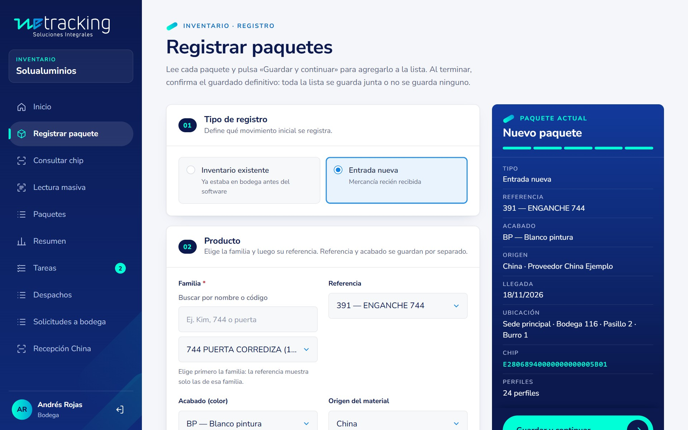
Registro de una entrada nueva. A la derecha, el resumen del paquete actual.
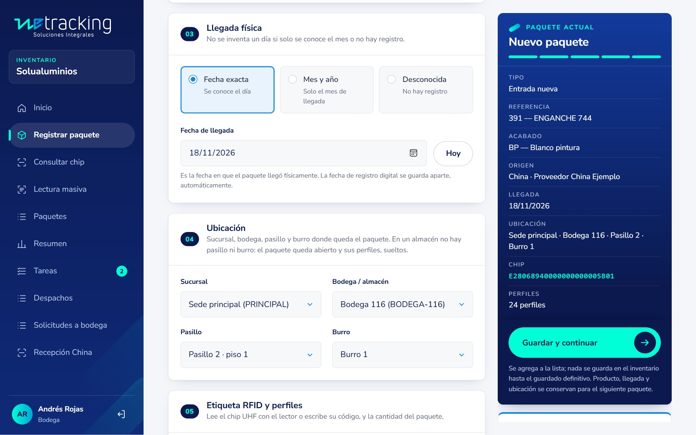
Llegada física y ubicación: Bodega 116, pasillo 2, burro 1.
2.3 Lista por guardar y guardado definitivo
Guardar y continuarno guarda en el inventario: agrega el paquete a la lista por guardar. El producto, la llegada y la ubicación se conservan, así que para el siguiente paquete igual solo lees otro chip y escribes su cantidad.
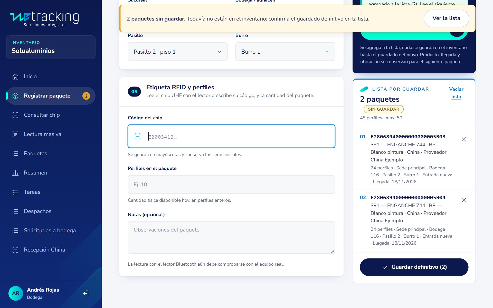
Dos paquetes en la lista por guardar. Arriba, el aviso de que todavía no están en el inventario.
Revisa la lista. Para quitar un paquete, usa la X de su fila; para empezar de nuevo, Vaciar lista.
Presiona Guardar definitivo y luego Confirmar guardado.
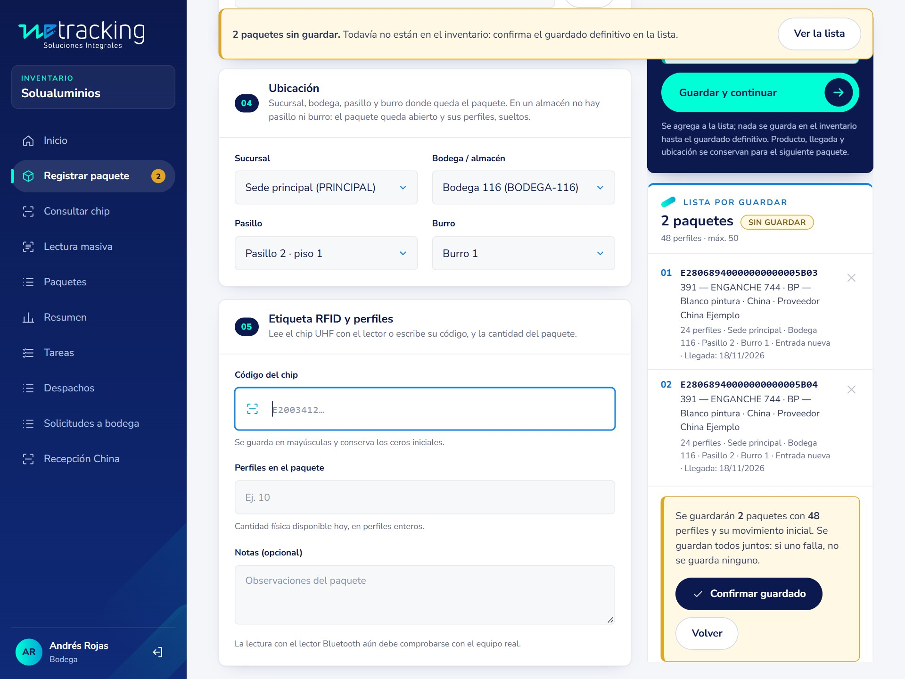
Confirmación del guardado: todos los paquetes se guardan juntos o no se guarda ninguno.
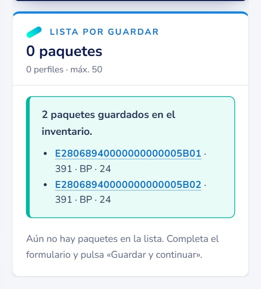
Paquetes guardados en el inventario.
2.4 Reglas del registro
Hasta 50 paquetes por lista.
El código del chip se guarda en mayúsculas y conserva los ceros iniciales.
La cantidad va en perfiles enteros: la cantidad física que hay hoy.
Una misma lista lleva un solo origen. Si cambias de China a Nacional, guarda primero la lista anterior.
La lista se conserva en esa pestaña del navegador mientras no la guardes. No cierres la pestaña con paquetes sin guardar. Si cierras sesión con paquetes en la lista, la app te pregunta si quieres revisarlos, conservarlos o descartarlos.
3Consultar y operar un paquete
3.1 Consultar por chip
En Consultar chip, lee el chip o escribe su código y presiona Buscar paquete. Verás la referencia, el color, los perfiles disponibles, la ubicación, la llegada física y la fecha de registro. Debajo están las Operaciones y el historial.
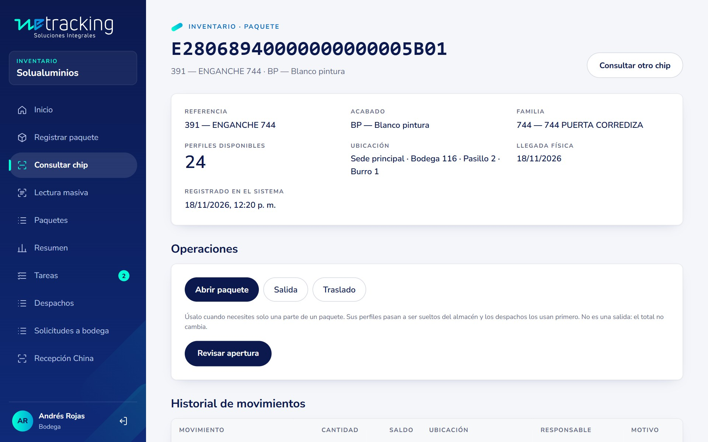
Detalle de un paquete con sus operaciones.
3.2 Abrir paquete
Úsalo cuando necesites solo una parte de un paquete cerrado. Sus perfiles pasan a ser sueltos en ese mismo lugar y los despachos los usan primero. No es una salida: el total no cambia. Un paquete se abre una sola vez y no necesita chip nuevo.
En la pestaña Abrir paquete, presiona Revisar apertura.
Lee el resumen y presiona Abrir paquete.
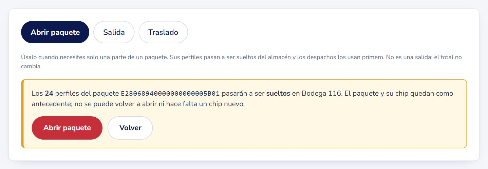
Confirmación de la apertura.
3.3 Salida
Descuenta perfiles del paquete (por ejemplo, una venta de mostrador). Las entregas de órdenes de venta no se hacen aquí, sino con despachos (capítulo 5).
En la pestaña Salida, escribe los perfiles que salen (no más del saldo disponible).
Opcional: el motivo o documento.
Revisa el saldo resultante y presiona Confirmar salida.
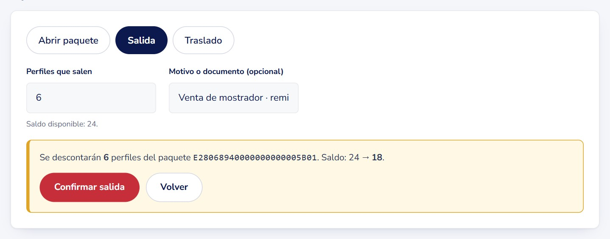
Salida de 6 perfiles: el saldo pasa de 24 a 18.
3.4 Traslado
Mueve paquetes completos a otra bodega, almacén, pasillo o burro; la cantidad no cambia. Puedes trasladar solo este paquete o agregar otros leyendo su chip.
En la pestaña Traslado, si quieres mover más paquetes, lee sus chips en Agregar otro paquete y presiona Agregar.
Elige el destino: sucursal, bodega o almacén, pasillo y burro.
Opcional: el motivo o remisión.
Presiona Revisar traslado y luego Confirmar traslado.
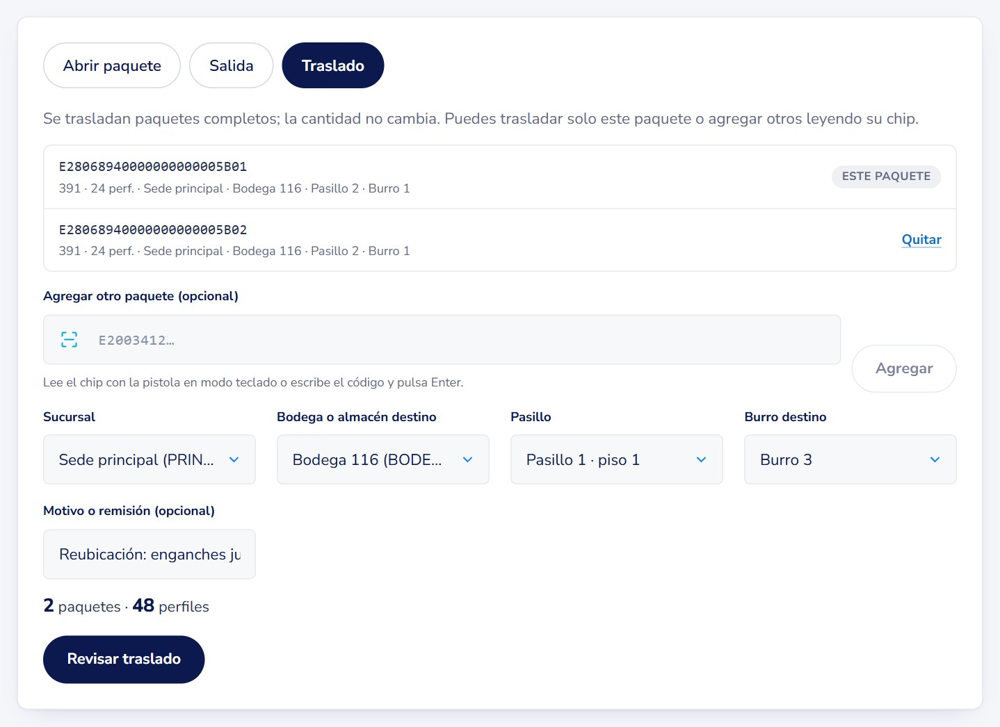
Traslado de dos paquetes al pasillo 1, burro 3.
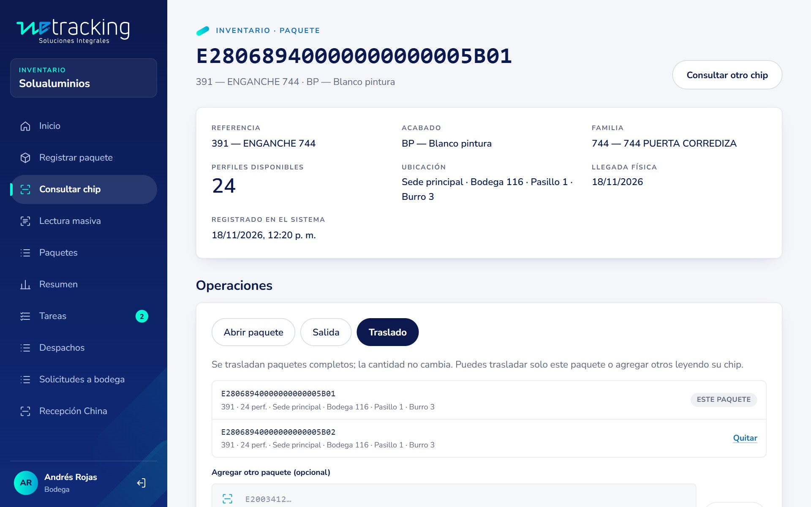
Traslado registrado: la ubicación del paquete ya cambió.
A un almacén
Si trasladas a un almacén, el paquete queda abierto y sus perfiles quedan sueltos para la venta.
3.5 Historial de movimientos
Cada paquete guarda sus movimientos: entrada o inventario inicial, aperturas, salidas, traslados y ajustes. Muestra la cantidad, el saldo, la ubicación, el responsable y el motivo.
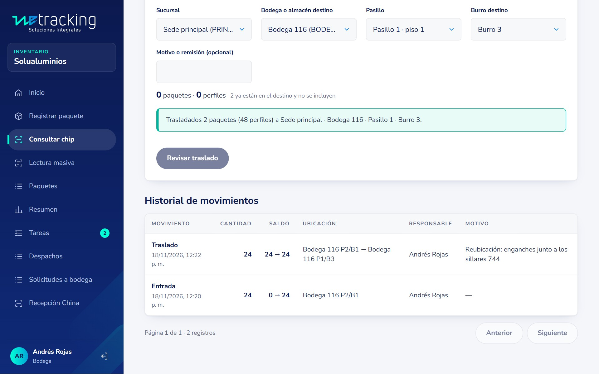
Historial: entrada nueva y traslado, con su responsable.
4Lectura masiva y traslado masivo
Lectura masiva sirve para leer muchos paquetes a la vez y ver qué referencia es cada uno. Leer no cambia el inventario.
Conecta la pistola con Conectar lector Bluetooth, o deja el cursor en Código del chip si la pistola está en modo teclado. También puedes pegar varios códigos.
Aprieta el gatillo cerca de los paquetes. Cada chip aparece una sola vez, aunque se lea varias veces.
Revisa los contadores: chips leídos, registrados (con sus perfiles) y no registrados.
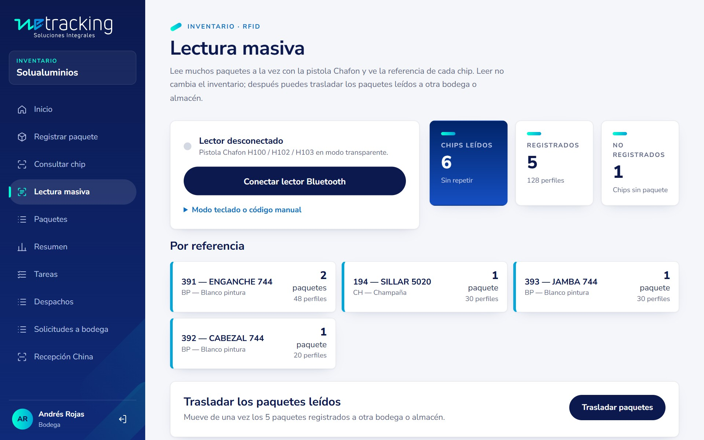
Seis chips leídos: cinco registrados y uno sin paquete.
Abajo verás el resumen por referencia y la lista de chips. Puedes filtrarla por Registrados o No registrados. Un chip no registrado tiene el botón Registrar, que lo lleva a Registrar paquete. Si leíste un paquete vecino por error, usa Quitar.
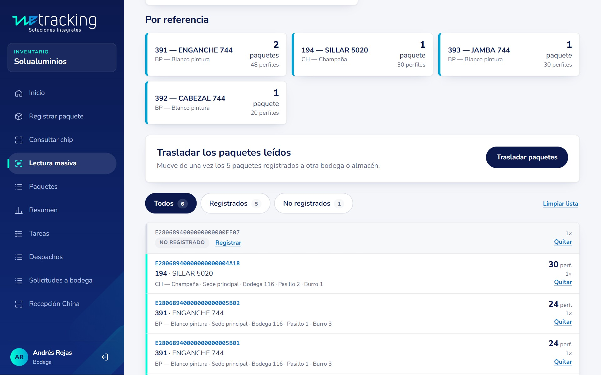
Resumen por referencia y lista de chips leídos.
Trasladar los paquetes leídos
Con Trasladar paquetes mueves de una vez todos los paquetes registrados de la lista. Es todo o nada: si uno no se puede mover, no se mueve ninguno.
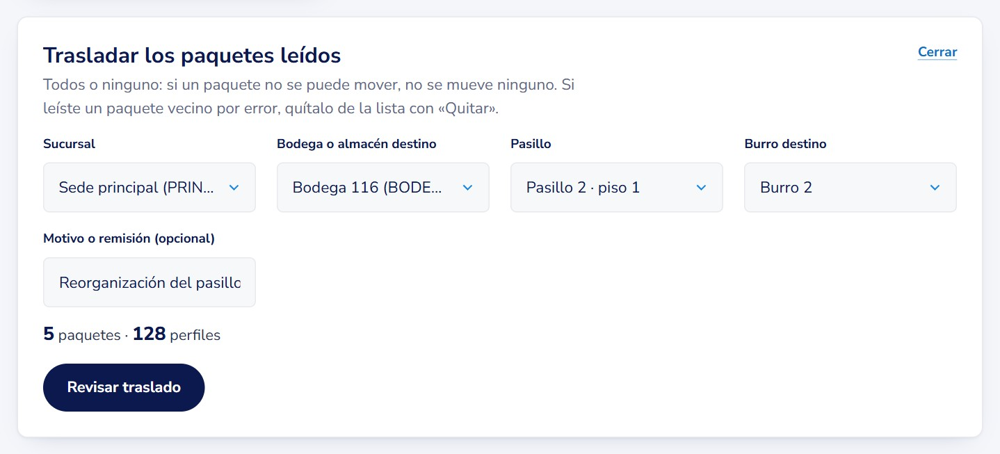
Traslado masivo de 5 paquetes (128 perfiles).
5Despachos
Cuando Ventas confirma una orden y crea un despacho, te llega una tarea para preparar el material y confirmar su salida.
5.1 La tarea del despacho
En Tareas verás el despacho con lo que hay que preparar y su plazo. Presiona Abrir despacho. También lo encuentras en Despachos.
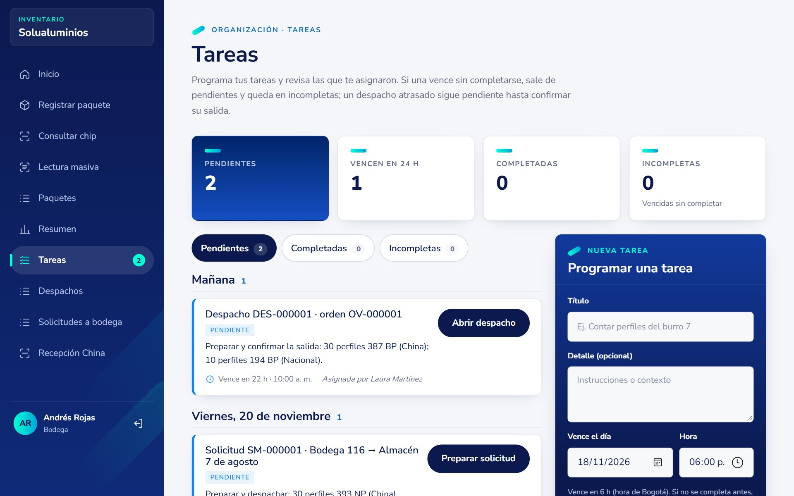
Tareas de Bodega: un despacho y una solicitud de materiales.
5.2 Leer los paquetes
El despacho muestra cada renglón con lo que falta y los paquetes sugeridos, con su pasillo y burro. Primero se sugieren los perfiles sueltos y luego los paquetes más antiguos.
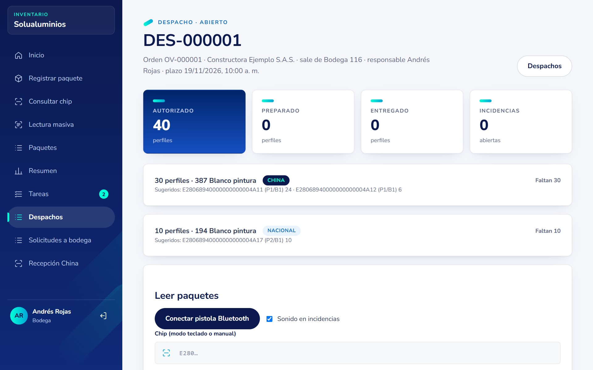
Despacho abierto: 40 perfiles autorizados y los paquetes sugeridos.
Ve al pasillo y burro sugeridos.
Lee cada paquete con la pistola (o escribe el código en Chip y presiona Enter).
Revisa que cada renglón quede Completo.
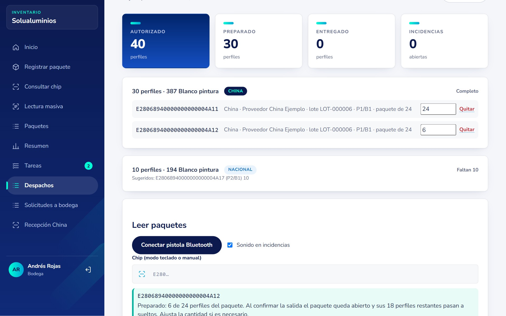
Primer renglón completo con dos paquetes.
Paquete usado en parte
Si de un paquete solo se necesita una parte, el despacho lo indica («Preparado: 6 de 24 perfiles»). Al confirmar la salida, ese paquete queda abierto y el resto de sus perfiles pasa a sueltos.
5.3 Incidencias
Si lees un paquete que no corresponde (otra referencia, otro color u otro origen), aparece una incidencia y ese material no cuenta para el despacho. Retira el paquete, escribe cómo se resolvió y presiona Resolver. La salida solo se confirma cuando no quedan incidencias abiertas.
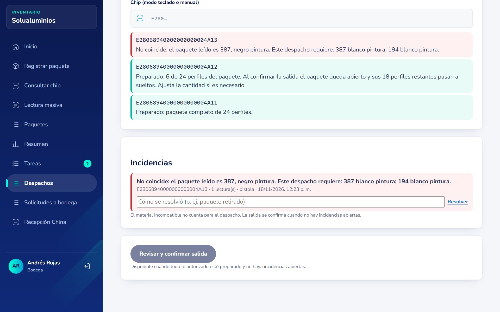
Incidencia: se leyó un sillar negro y el despacho pide blanco.
5.4 Confirmar la salida
Cuando todo esté preparado y sin incidencias abiertas, presiona Revisar y confirmar salida.
Confirma que el material salió físicamente con Confirmar salida física.
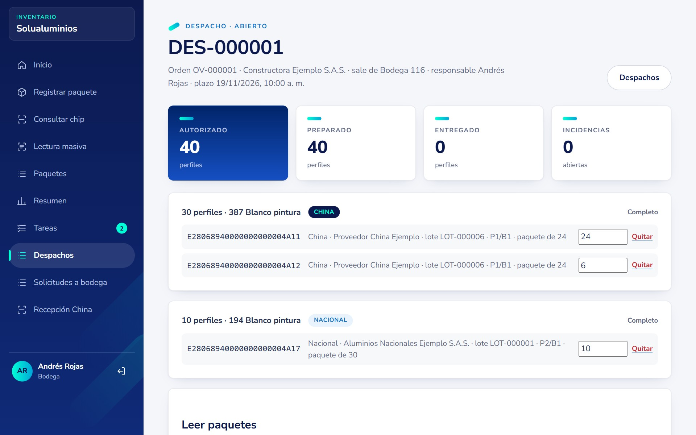
Todo preparado: 40 de 40 perfiles y ninguna incidencia abierta.
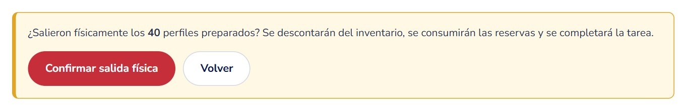
Confirmación de la salida física.
Al confirmar, se descuenta del inventario, se consumen las reservas de la orden, se completa tu tarea y se avisa al vendedor.
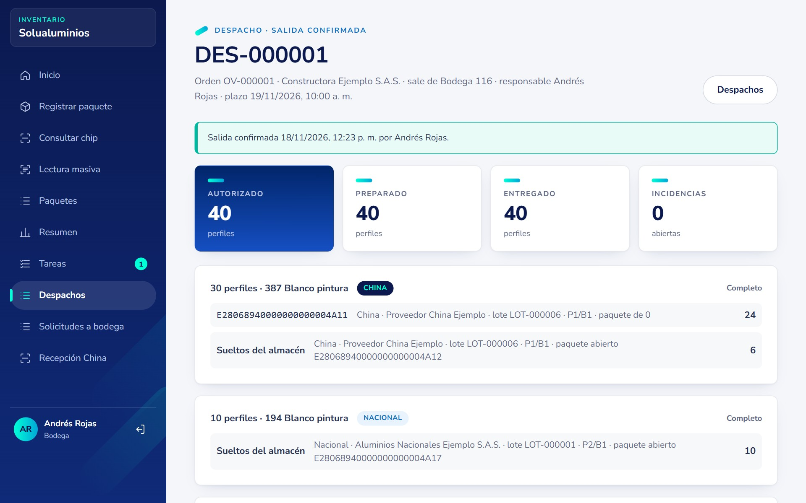
Despacho con la salida confirmada.
Si no lo puedes hacer
Si no vas a poder preparar un despacho a tiempo, avisa: el despacho se puede reasignar a otra persona de la misma bodega. Un despacho atrasado sigue pendiente hasta que se confirme su salida.
6Solicitudes de materiales
Ventas pide perfiles de una bodega para un almacén. La bodega prepara paquetes completos y confirma la salida; el almacén marca el pedido como recibido.
6.1 Preparar en la bodega
En Tareas, presiona Preparar solicitud (o ábrela en Solicitudes a bodega).
Revisa los materiales y los paquetes disponibles en tu bodega, con su pasillo y burro.
Lee el chip de cada paquete en Leer chip del paquete. Se reserva el paquete completo.
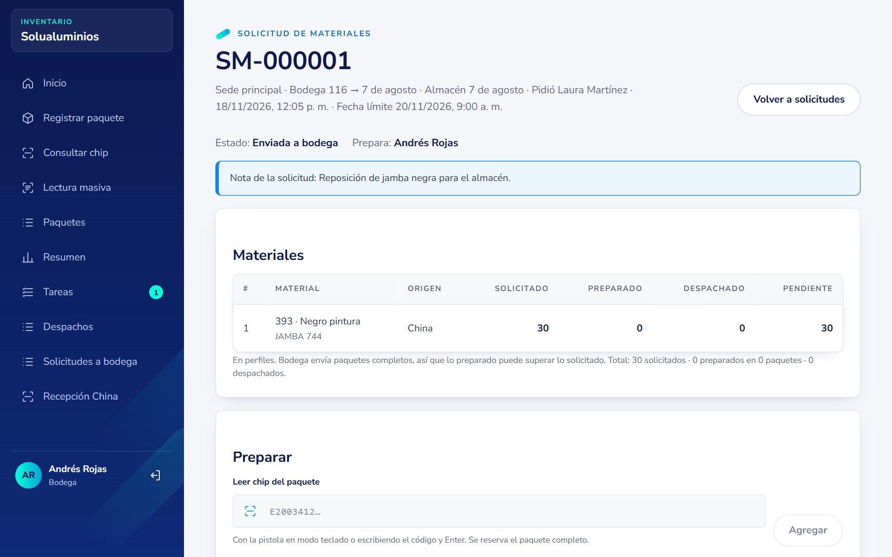
Solicitud por preparar: 30 perfiles de jamba 744 negro pintura.
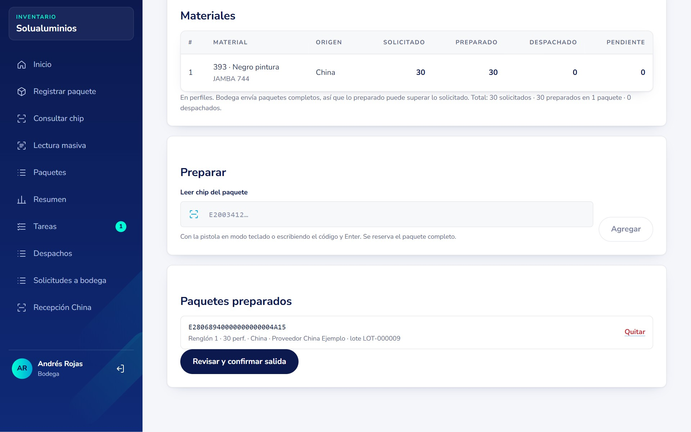
Paquete preparado para el renglón 1.
Como se envían paquetes completos, lo preparado puede superar lo solicitado. Si un paquete no va, usa Quitar.
6.2 Confirmar la salida
Presiona Revisar y confirmar salida y luego Confirmar salida física. Los paquetes se trasladan completos al almacén y allá quedan abiertos, como perfiles sueltos para la venta. Al almacén le llega la tarea de recibir.
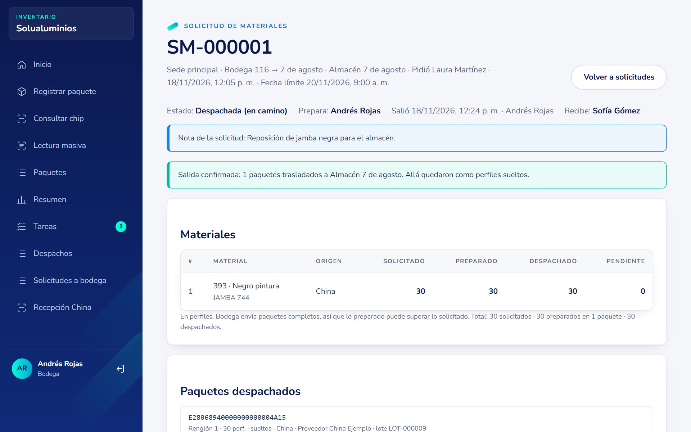
Solicitud despachada, en camino al almacén.
6.3 Recibir en el almacén
La persona de bodega del almacén destino recibe la tarea «Recibir SM-…».
Cuando llegue el material, presiona Revisar y marcar recibido.
Opcional: escribe las novedades (por ejemplo, un paquete que no llegó o llegó dañado).
Presiona Marcar como recibido.
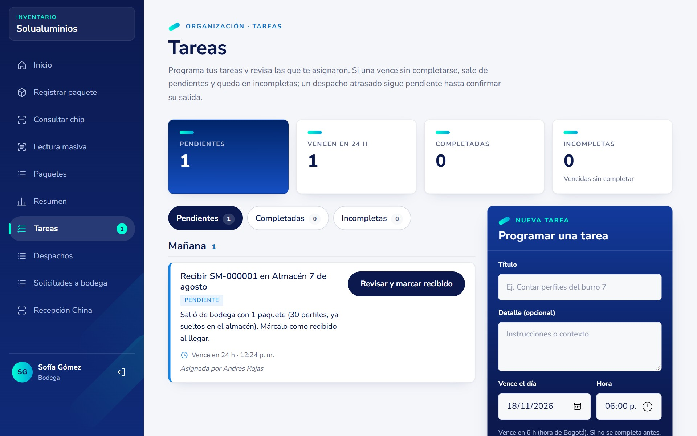
Tarea de recepción en el Almacén 7 de agosto.
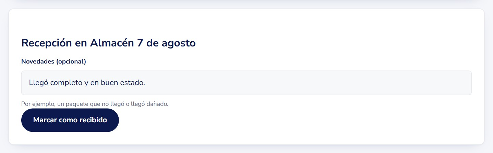
Recepción con una novedad.
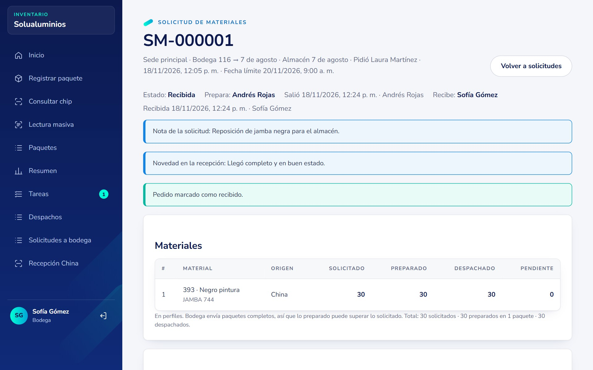
Solicitud recibida.
7Paquetes y Resumen
Resumen muestra los perfiles disponibles por referencia y color, los paquetes cerrados y los perfiles sueltos. Ubicaciones dice en qué bodega, pasillo y burro está cada cantidad.
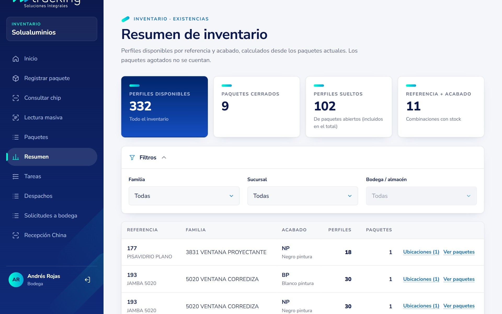
Resumen de inventario.
Paquetes lista todos los paquetes con filtros por familia, referencia, color, sucursal, bodega, pasillo, burro, estado, procedencia y proveedor.
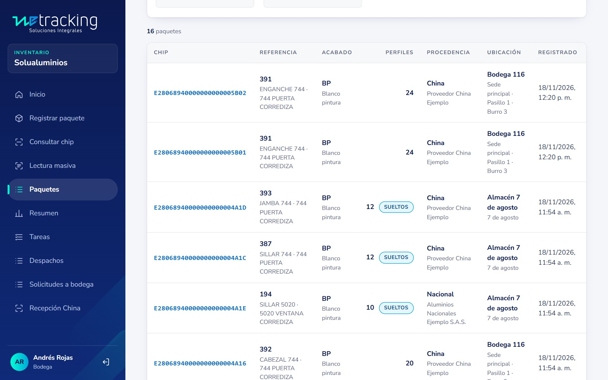
Lista de paquetes.
8Tareas
En Tareas están los despachos, solicitudes y recepciones que te asignan, y puedes programar tus propias tareas:
Pendientes: lo que tienes por hacer, ordenado por fecha; arriba ves cuántas vencen en las próximas 24 horas.
Completadas e Incompletas (vencidas sin completar).
Las tareas de despacho y de solicitudes se completan solas al confirmar la salida o la recepción.
Para una tarea propia: escribe el título, el día y la hora en que vence, y presiona Crear tarea; cuando la hagas, Marcar completada.
9Preguntas frecuentes
Leí un chip y dice que ya está registrado.
Ese paquete ya existe; no se registra de nuevo. Consúltalo en Consultar chip y, si cambió de lugar, haz un traslado.
Guardé y continué, pero el paquete no aparece en Paquetes.
«Guardar y continuar» solo lo agrega a la lista. Falta el guardado definitivo (2.3).
¿Inventario existente o entrada nueva?
Inventario existente: estaba en bodega antes del sistema. Entrada nueva: acaba de llegar.
No sé el día en que llegó el paquete.
Usa Mes y año si conoces el mes, o Desconocida. No inventes un día.
Un paquete tiene una cantidad equivocada.
Las correcciones (ajustes) las hace el administrador. Avísale con el código del chip y la cantidad real.
No puedo confirmar la salida de un despacho.
Revisa que todos los renglones estén completos y que no haya incidencias abiertas (5.3).
El despacho me sugiere un paquete que no encuentro.
Lee otro paquete que cumpla (misma referencia, color y origen) y avisa al administrador para revisar la ubicación del que falta.
El lector no escribe en el campo.
Deja el cursor en el campo «Código del chip» (modo teclado), o conecta la pistola con «Conectar lector Bluetooth». Si nada funciona, escribe el código a mano.